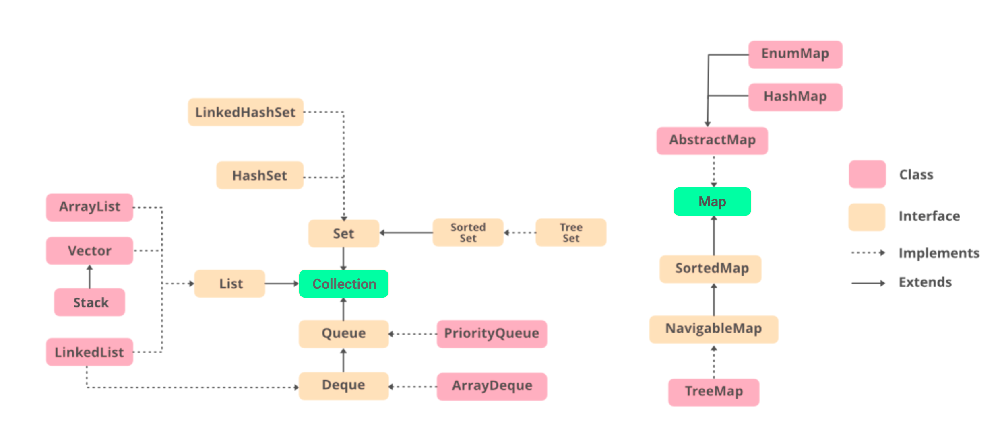

[Java] 컬렉션 프레임워크 - (1) 리스트(List)
컬렉션 프레임워크
배열(Array)은 생성할 때 크기가 결정된다. 따라서 배열이 생성되면 동적으로 데이터를 추가하거나 삭제할 수 없다. 이를 해결하기 위해 Java API는 컬렉션 프레임워크(Collection Framework)를 지원한다.

컬렉션 프레임워크는 java.util 패키지에 포함되어있으며, 가장 중요한 요소는 List, Set, Map이다.
List
Java API에서 제공하는 List의 정의는 다음과 같다.
1 | public interface List<E> extends Collection<E> { |
List는 Interface이므로 인스턴스를 생성할 수 없다. 따라서 List의 구현체가 필요하다. 다행히 자바 API에서는 Vector, ArrayList, LinkedList 등 다양한 구현체를 제공한다.
ArrayList
ArrayList는 가장 많이 사용되는 List의 구현체다. ArrayList는 다음과 같이 선언하고 초기화한다.
1 | List<String> list = new ArrayList<String>(); |
다음과 같이 요소를 추가한다.
1 | list.add("Ronaldo"); |
다음과 같이 요소를 삭제할 수 있다.
1 | list.remove(0); |
요소 값을 변경할 수 있다.
1 | list.set(0, "Son"); |
요소 값에 접근할 수 있다.
1 | System.out.println(list.get(0)); // Son |